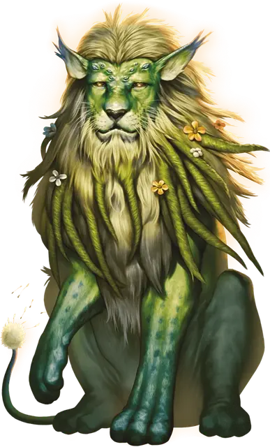

Лев-одуванчик
Dandylion
Большая Фея, хаотично-нейтральная

Класс Доспеха 14
Хиты 90 (12к10 + 24)
Скорость 50 футов
| мод | спас | ||
|---|---|---|---|
| СИЛ | 22 | +6 | +9 |
| ЛОВ | 19 | +4 | +4 |
| ТЕЛ | 14 | +2 | +2 |
| мод | спас | ||
|---|---|---|---|
| ИНТ | 16 | +3 | +3 |
| МДР | 17 | +3 | +3 |
| ХАР | 18 | +4 | +7 |
Навыки Восприятие +6, Выживание +6, Природа +9
Чувства тёмное зрение 60 футов, пассивное Восприятие 16
Языки Общий, Сильван
Опасность 6 (2300 опыта)
Бонус мастерства +3
Особенности
Сопротивление магии. Лев-одуванчик совершает с преимуществом спасброски против заклинаний и магических эффектов.
Тактика стаи. Лев-одуванчик совершает с преимуществом броски атаки по существу, если как минимум один союзник льва находится в пределах 5 футов от этого существа, и этот союзник дееспособен.
Действия
Мультиатака. Лев-одуванчик совершает одну атаку Укусом и одну атаку Когтями.
Укус. Рукопашная атака оружием. +9 к попаданию, досягаемость 5 футов, одна цель. Попадание: 13 (2к6+6) колющего урона.
Когти. Рукопашная атака оружием. +9 к попаданию, досягаемость 5 футов, одна цель. Попадание: 20 (4к6+6) рубящего урона. Если лев-одуванчик переместится как минимум на 20 футов по прямой к цели прямо перед попаданием, то цель должна преуспеть в спасброске Силы Сл 17, иначе будет сбита с ног. Если цель сбита с ног, лев-одуванчик может бонусным действием совершить по ней одну атаку Укусом.
Омолаживающие семена (2/день). Лев-одуванчик выпускает из своего хвоста порцию семян, заполняющих сферу радиусом 10 футов с центром на нём. Каждое существо в сфере, по выбору льва-одуванчика, может немедленно окончить одно из следующих состояний на себе (по выбору существа): ослепление, глухота, паралич или отравление. Кроме того, вся почва в зоне действия сферы обогащается, восстанавливая увядшую растительность в зоне до полного выздоровления и заставляя все культуры в зоне давать урожай в два раза больше обычного на следующий год.
Использование заклинаний. Лев-одуванчик накладывает одно из следующий заклинаний, не нуждаясь в никаких материальных компонентах, и Харизма является для них базовой характеристикой (Сл спасброска от заклинания 15):
• Неограниченно: искусство друидов [druidcraft], очищение пищи и питья [purify food and drink], указание [guidance]
• 2/день каждое: опутывание [entangle], чудо-ягоды [goodberry]
• 1/день каждое: разговор с растениями [speak with plants]
Реакции
Рев гордости. Когда существо в пределах 60 футов от льва-одуванчика попадает по нему броском атаки, лев-одуванчик может издать яростный рёв. Существо, которое спровоцировало эту реакцию, должно преуспеть в спасброске Мудрости Сл 15, иначе станет испуганным до конца следующего хода льва-одуванчика.
Описание
Львы-одуванчики — это травоядные фермеры, которые выращивают прекрасные сады цветов и поля зерновых культур в Стране Фей. При уважительном отношении львы-одуванчики охотно делятся своими богатыми знаниями о земледелии с теми, кто проявляет интерес к этой теме. Они дают отличные советы по садоводству, а их фрукты и овощи полезны и вкусны. Некоторые из их культур также обладают магическими свойствами, что делает их ценными ингредиентами для зелий и компонентами заклинаний. Львы-одуванчики свирепо защищают свои фермы, и любой, кто растопчет или украдет у льва-одуванчика его плоды, скорее всего, навлечёт на себя гнев этого существа. Самый верный способ уговорить льва-одуванчика отдать часть своих любимых продуктов или цветов — это польстить ему.
У льва-одуванчика мягкий зелёный мех, переплетённый с мелкими листьями. Маленькая пушистая головка на конце хвоста красавца льва содержит семена. Эти семена обогащают почву, давая начало здоровым растениям и обильным урожаям. Часто львы-одуванчики плетут ожерелья с лепестками из своих цветочных садов и хвастаются плодородием своей почвы. Львы-одуванчики любят хвастаться пышностью своих солнечно-жёлтых грив.